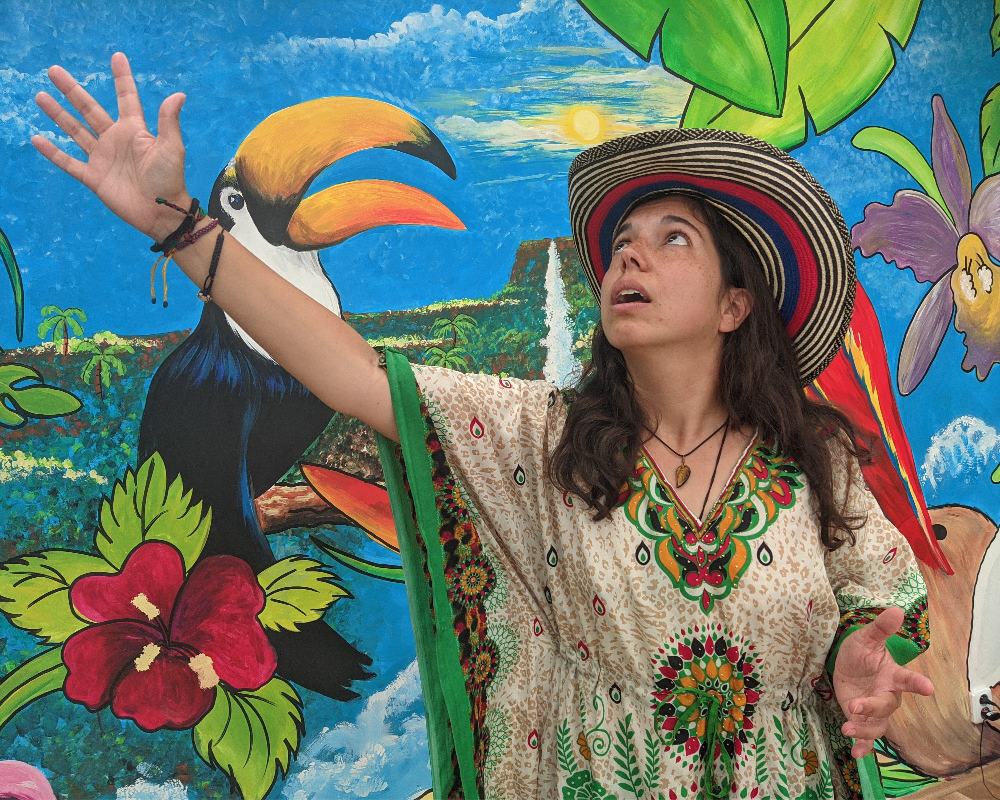
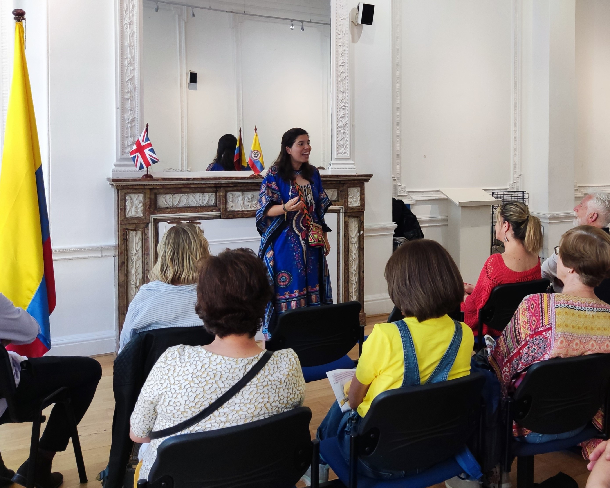
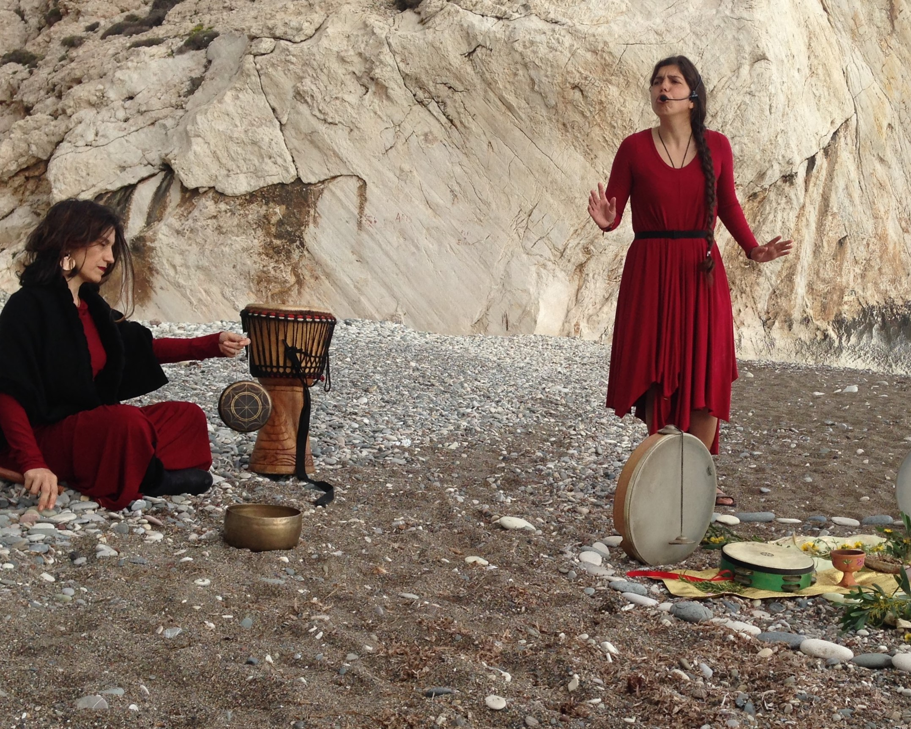

"Los cuentos de hadas son más que verdad: no porque nos digan que existen dragones,
sino porque nos dicen que los dragones pueden ser vencidos."

PRESENTACIONES DE NARRACIÓN
A través de narraciones entretenidas, desafiantes y conmovedoras de todo el mundo, las presentaciones para adultos dejarán al público conmovido, inspirado y reflexionando profundamente. Los espectáculos consisten en una colección de historias estructuradas en torno a un tema común, como cuentos de sabiduría, folclore feminista y realismo mágico. Las presentaciones para niños se centran en la diversión y la curiosidad, con alguna lección ocasional incluida.

CONFERENCIAS MAGISTRALES
Los estudiantes universitarios de todo el mundo están experimentando niveles muy preocupantes de problemas de salud mental, como depresión, ansiedad y pensamientos suicidas. Y lo saben. Dondequiera que he ido, he descubierto que los jóvenes tienen hambre de sanación. A través de historias empoderadoras que desafían las narrativas de víctima y mis propias experiencias personales sanando de la depresión, ayudo a los jóvenes adultos a transformar sus historias y vivir con valentía.

CÍRCULOS DE SANACIÓN A TRAVÉS DE HISTORIAS
Este taller en grupos pequeños, de 3 horas, lleva a los participantes a una meditación guiada para descubrir y sanar historias ocultas en el subconsciente. Los participantes tendrán tiempo para discutir sus experiencias e interpretar el significado simbólico de la historia que surgió para ellos, y se irán con herramientas para continuar profundizando por su cuenta.